Cagliari flavours and Sardinian specialities
A taste of Cagliari. 17 specialities to recognise, addresses to explore and markets to discover local flavours.
What to taste Where to stop The markets 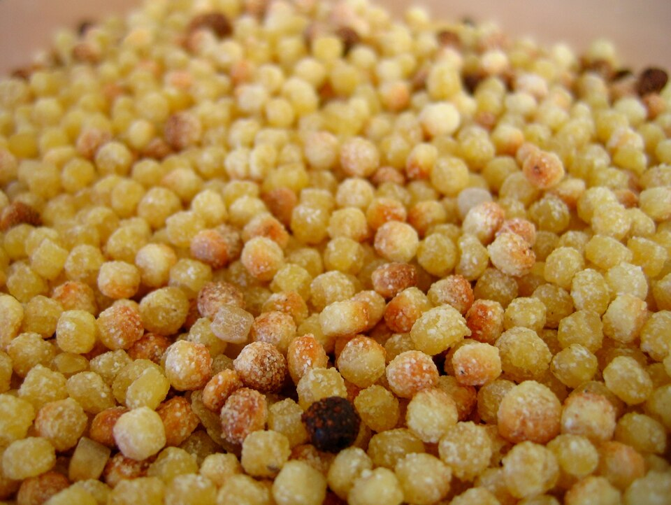
Uncooked fregula, before cooking.
Photo and licence Emily Parkhurst · Wikimedia Commons · CC BY-SA 2.0
Photo of the speciality, not necessarily from the suggested venue. Resized and compressed; cropped for display.
Choose what tempts you City dishes and regional produce: descriptions explain when a speciality comes from another part of the region. Try it at marks a documented dish; For this food tradition suggests a relevant venue whose menu should be checked. You can also search for the dish on the map.
Your browser cannot save the list: it remains available while this page is open.
Uncooked fregula, before cooking.
Photo and licence Emily Parkhurst · Wikimedia Commons · CC BY-SA 2.0
Photo of the speciality, not necessarily from the suggested venue. Resized and compressed; cropped for display.
Produce and shops
Fregula Small Sardinian pasta grains: also look for the cooked version with clams.
For this food tradition Antica Cagliari, Ristorante
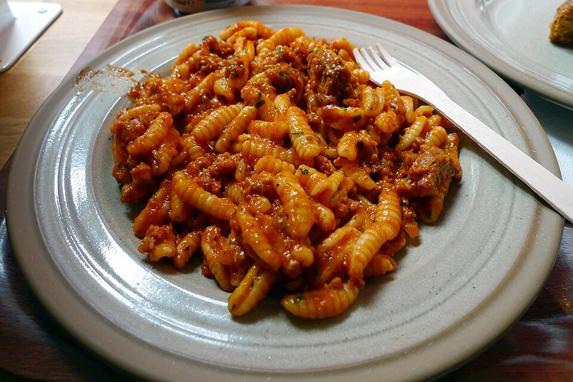
Photo and licence Ewan Munro from London, UK · Wikimedia Commons · CC BY-SA 2.0
Photo of the speciality, not necessarily from the suggested venue. Resized and compressed; cropped for display.
At the table
Campidano malloreddus Sardinian pasta with sausage sauce.
Try it at Sa Domu Sarda
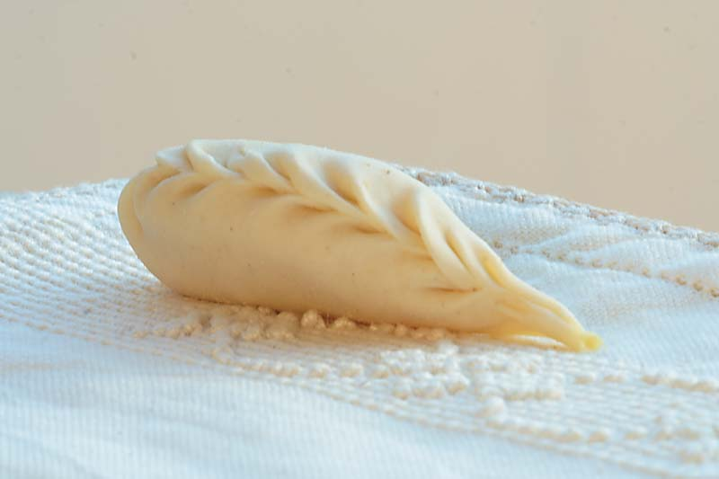
An uncooked culurgione showing the wheat-ear closure.
Photo and licence andria · Wikimedia Commons · CC BY-SA 2.0
Photo of the speciality, not necessarily from the suggested venue. Resized and compressed; cropped for display.
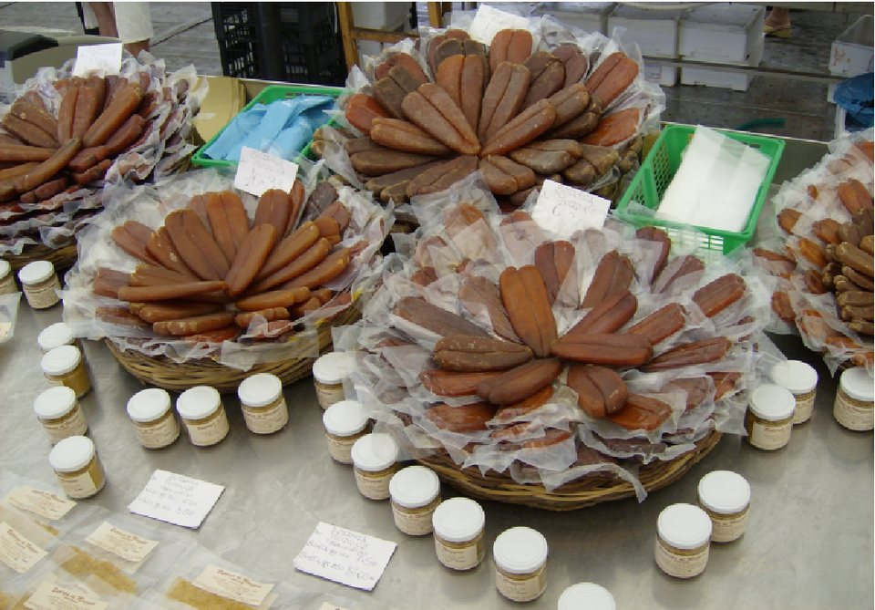
Photo and licence Freek Janssens · Wikimedia Commons · CC BY-SA 3.0
Photo of the speciality, not necessarily from the suggested venue. Resized and compressed; cropped for display.
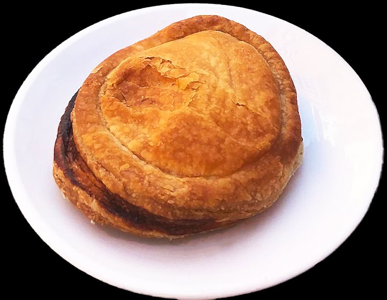
Photo and licence Sandrino 14 · Wikimedia Commons · CC BY-SA 4.0
Photo of the speciality, not necessarily from the suggested venue. Resized and compressed; cropped for display.
Street food
Cagliari puff pastry pizzetta Two layers of puff pastry with tomato and caper.
For this food tradition Durke
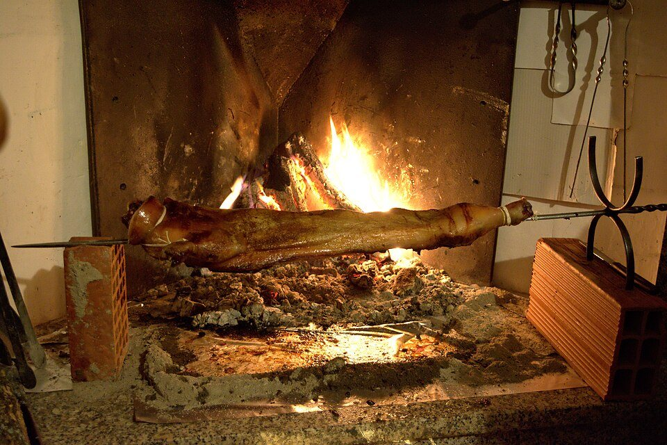
Photo and licence Japs 88 · Wikimedia Commons · CC BY-SA 4.0
Photo of the speciality, not necessarily from the suggested venue. Resized and compressed; cropped for display.
At the table
Sardinian roast suckling pig Roast suckling pig from the regional tradition.
For this food tradition Sa Domu Sarda
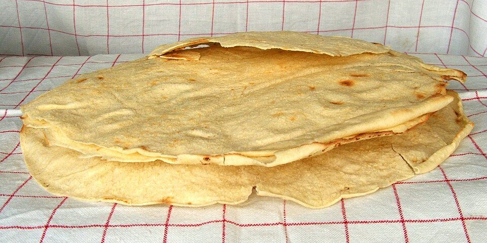
Photo and licence Luigi Chiesa · Wikimedia Commons · CC BY 3.0
Photo of the speciality, not necessarily from the suggested venue. Resized and compressed; cropped for display.
Produce and shops
Pane carasau Thin, crisp Sardinian flatbread.
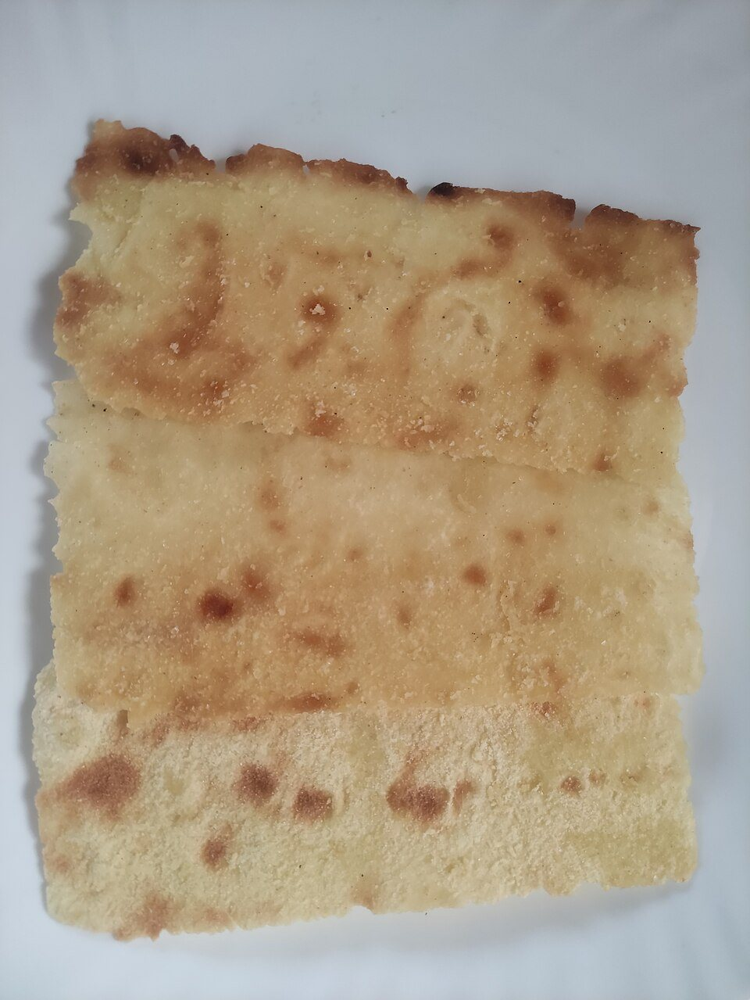
Photo and licence Francesc Fort · Wikimedia Commons · CC BY-SA 4.0
Photo of the speciality, not necessarily from the suggested venue. Resized and compressed; cropped for display.
Produce and shops
Pane guttiau Carasau dressed with olive oil and salt.
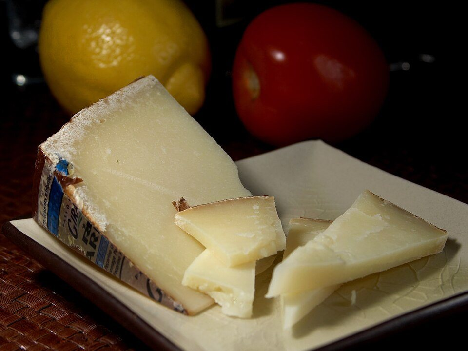
Photo and licence The original uploader was Frankie816 at English Wikipedia. · Wikimedia Commons · Public domain
Photo of the speciality, not necessarily from the suggested venue. Resized and compressed; cropped for display.
Produce and shops
Pecorino sardo Sheep’s cheese to compare young and mature.
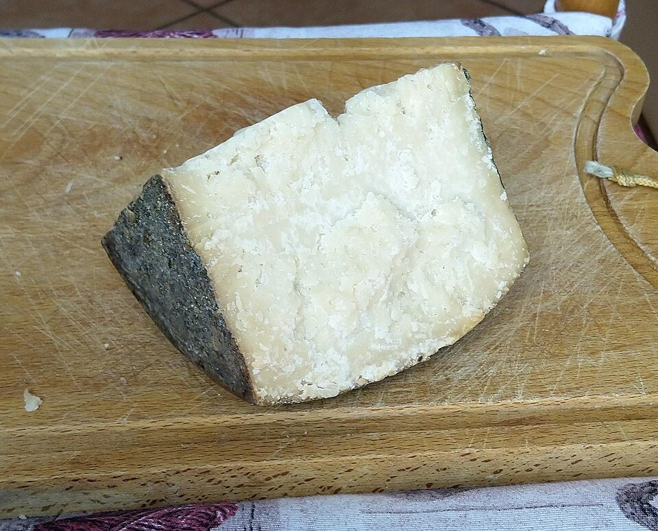
Photo and licence Yozh · Wikimedia Commons · CC BY-SA 4.0
Photo of the speciality, not necessarily from the suggested venue. Resized and compressed; cropped for display.
Produce and shops
Fiore sardo Sheep’s cheese from the pastoral tradition.
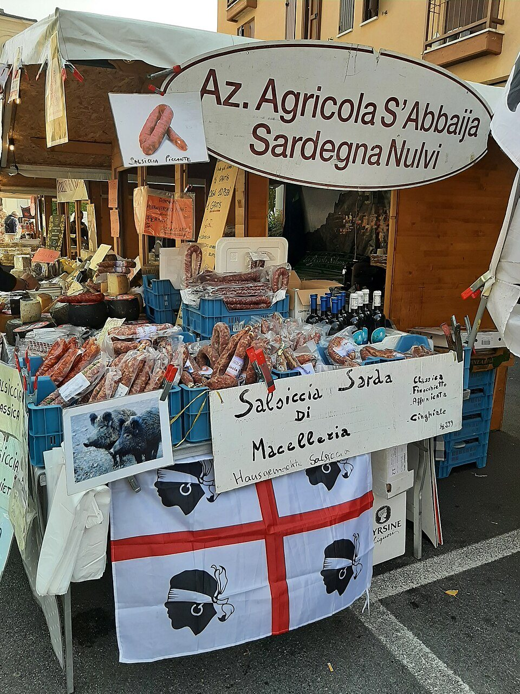
Photo and licence Ensahequ · Wikimedia Commons · CC BY-SA 4.0
Photo of the speciality, not necessarily from the suggested venue. Resized and compressed; cropped for display.
Produce and shops
Sardinian sausage Cured sausage, seasoned differently by each producer.
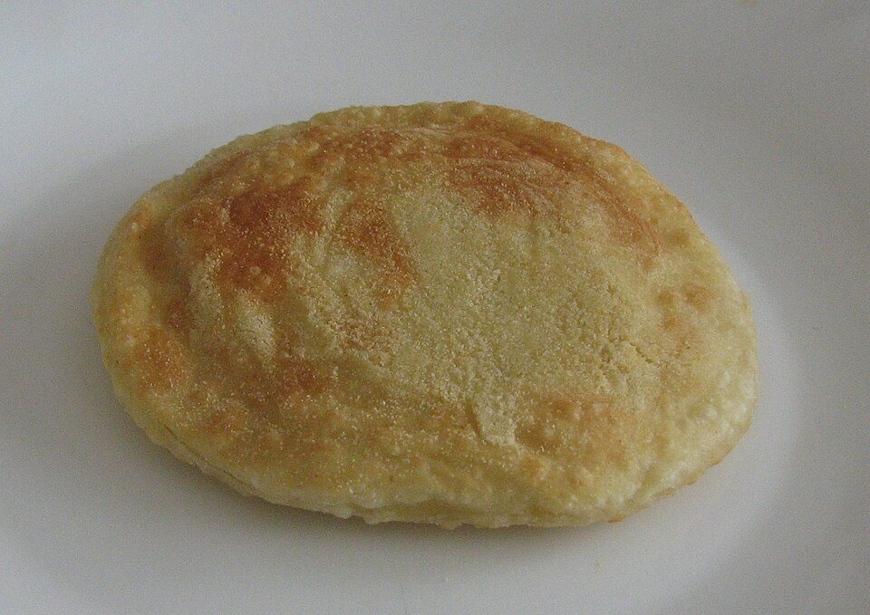
Photo and licence Terendo · Wikimedia Commons · Public domain
Photo of the speciality, not necessarily from the suggested venue. Resized and compressed; cropped for display.
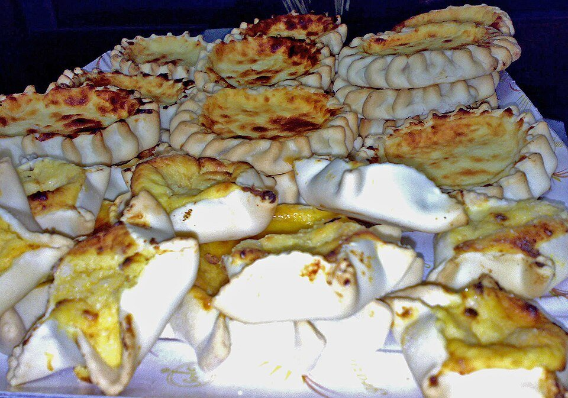
Photo and licence Cedrello · Wikimedia Commons · CC BY 3.0
Photo of the speciality, not necessarily from the suggested venue. Resized and compressed; cropped for display.
Sweets and breaks
Pardulas Pastry baskets with ricotta and saffron.
Try it at Durke
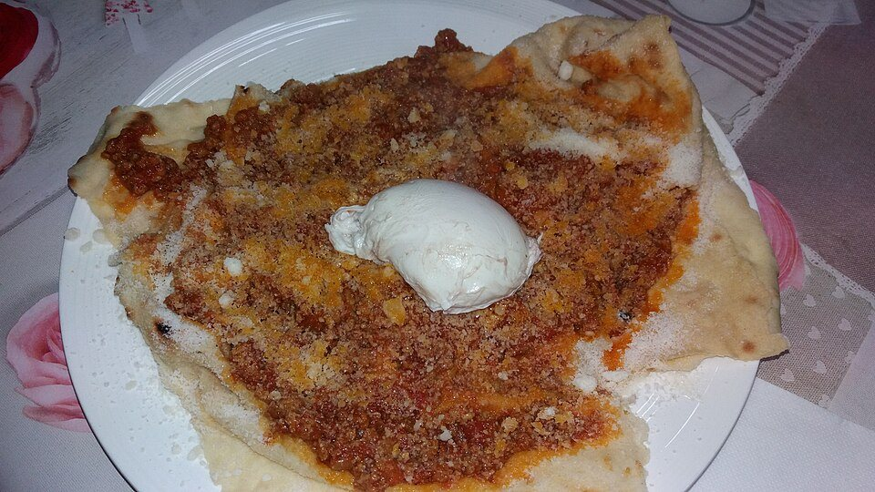
Photo and licence Frattau · Wikimedia Commons · CC BY-SA 4.0
Photo of the speciality, not necessarily from the suggested venue. Resized and compressed; cropped for display.
At the table
Pane frattau From Barbagia: carasau, tomato, pecorino and egg.
Try it at Panefratteria
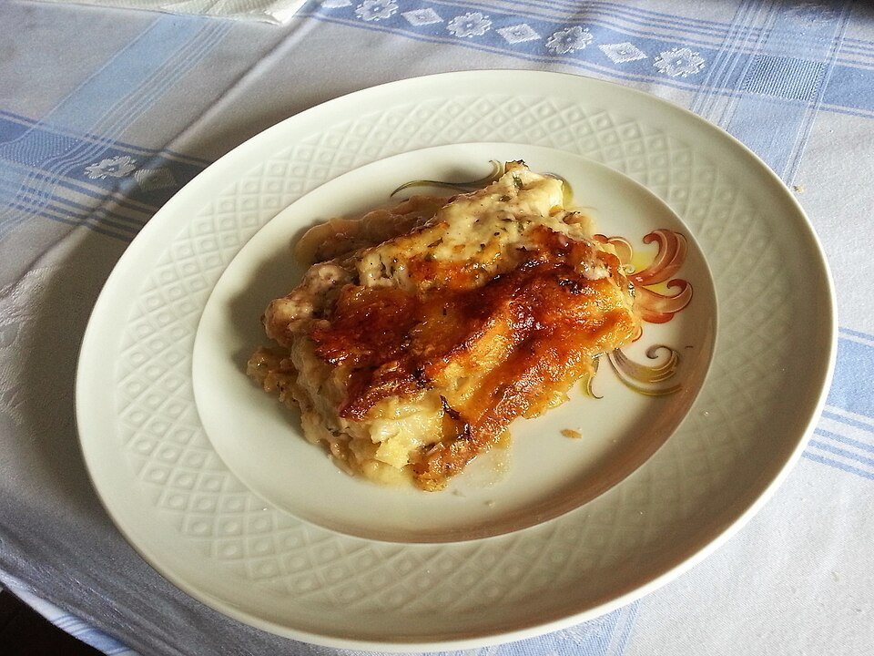
Photo and licence Gianni Careddu · Wikimedia Commons · CC BY-SA 4.0
Photo of the speciality, not necessarily from the suggested venue. Resized and compressed; cropped for display.
At the table
Gallura bread soup From Gallura: layers of bread, stock and cheese.
For this food tradition Sa Domu Sarda
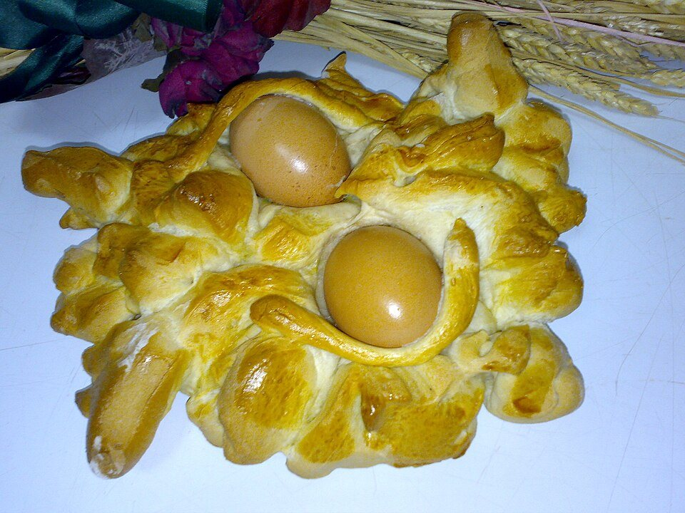
Photo and licence Cedrello · Wikimedia Commons · CC BY-SA 3.0
Photo of the speciality, not necessarily from the suggested venue. Resized and compressed; cropped for display.
Produce and shops
Coccoi bread Decoratively shaped Sardinian semolina bread.
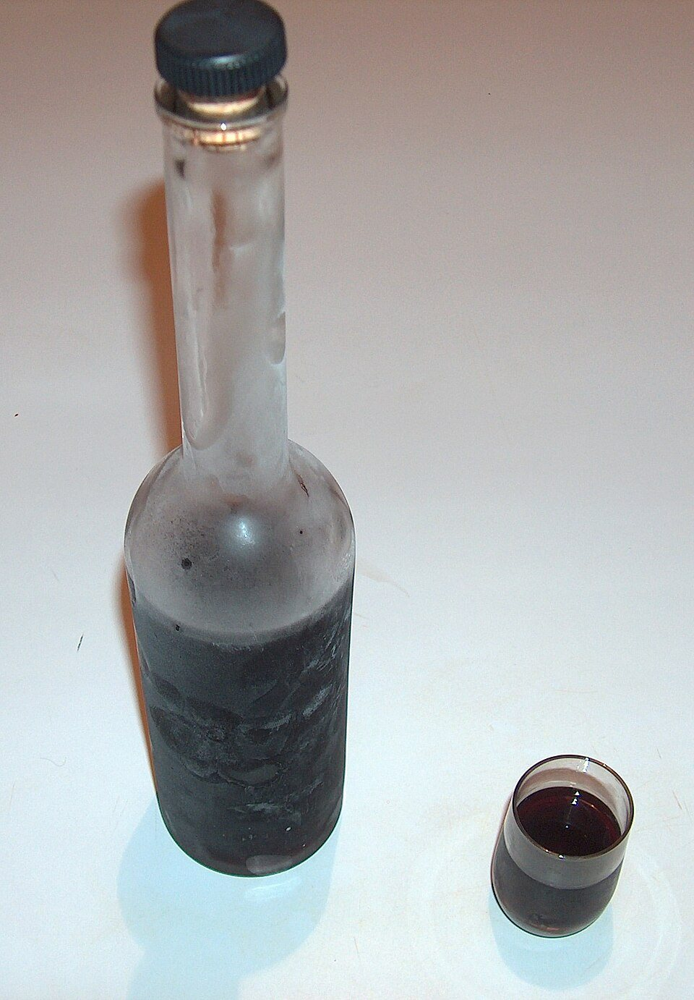
Photo and licence Giancarlo Dessì · Wikimedia Commons · CC BY-SA 3.0
Photo of the speciality, not necessarily from the suggested venue. Resized and compressed; cropped for display.
Produce and shops
Mirto liqueur An alcoholic Sardinian myrtle-berry liqueur.
No tastings match these filters. Choose Reset to see all dishes.
Addresses to start with An editorial selection based on published menus, shops and guides, rather than an absolute ranking. Check the branch, menu, availability and booking with the venue.
Among the stalls, inside the city Go to observe, shop or stop for a small bite. Days, opening times and individual vendors may change: each market includes a reference link.
Photo of the historic location; visit Piazza Nazzari.
Photo and licence Freek Janssens at nl.wikipedia · Wikimedia Commons · CC BY-SA 3.0
Photo of the speciality, not necessarily from the suggested venue. Resized and compressed; cropped for display.
San Benedetto, Piazza Nazzari location Piazza Amedeo Nazzari
The temporary Piazza Nazzari location replaces the historic building during works. Use the official map for fish, cheese and deli counters.
Information and source · Directions
Before the first bite Ask staff about ingredients and allergens: recipes, fillings and shared frying oil vary by venue. Seasons matter for seafood, vegetables and festive sweets. Clarify price, weight and table service before ordering.
Sources and selection method Editorial research dated 16 October 2026. Photographs identify the food and market; they do not certify a venue’s menu. Derivatives retain the photograph’s licence. Author, licence and original are listed in Photo and licence beside each image.


.jpg){kind=link}


.jpg){kind=link}